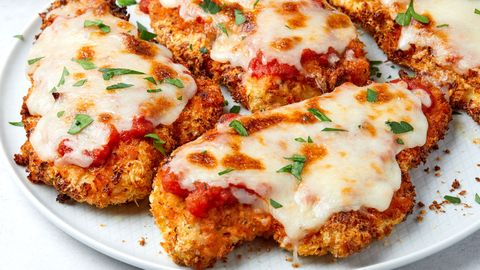

Homemade Chicken Parmesan

A delicious chicken parm guaranteed to be a hit
Let's get one thing straight: We love chicken Parmesan, but we've had our fair
share of mediocre versions. So we took it upon ourselves to do a deep dive into
this iconic dish. Six weeks, 20 pounds of chicken, and several arguments later,
we came up with our Platonic ideal.
Ingredients
- Extra-virgin olive oil
- Medium onion, finely chopped
- Garlic cloves, crushed
- Double-concentrated tomato paste
- Crushed red pepper flakes
- Tomato purée
- Kosher salt
- Skinless, boneless chicken breasts
- Panko (Japanese breadcrumbs)
- Low-moisture mozzarella
- Pre-grated Parmesan
- Large eggs
Steps
- Heat up some oil and combine all sauce ingredients
- Pound chicken breasts
- Combine garlic, lemon juice, and olive oil in a large baking dish. Season chicken cutlets all over with salt
- Make a dredging station: Whisk eggs, garlic powder, onion powder
- Dredge in panko, pressing firmly to adhere, ensuring no bare spots remain
- Grate mozzarella on the large holes of a box grater into a medium bowl; add Parmesan and toss to combine
- Heat over medium until an instant-read thermometer registers 400°
- Broil until cheese is melted, bubbling, and browned in spots, about 4 minutes. Remove chicken from broiler. Let cool slightly and sprinkle with parsley